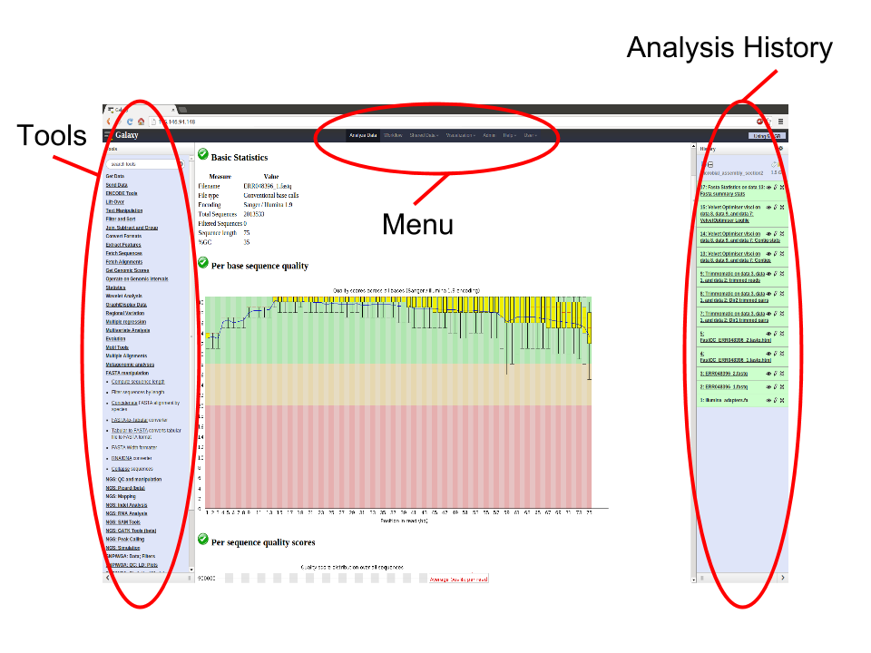

Introduction to Galaxy
Background
Galaxy is a web based analysis and workflow platform designed for biologists to analyse their own data. It comes with most of the popular bioinformatics tools already installed and ready for use. There are many Galaxy servers around the world and some are tailored to specific toolsets and reference data for analysis of human genomics, microbial genomics, proteomics etc.
There are some introductory slides available here.
Basically, the Galaxy interface is separated into 3 parts. The tool list on the left, the viewing pane in the middle and the analysis and data history on the right. We will be looking at all 3 parts in this tutorial.

Learning Objectives
At the end of this tutorial you should:
-
Be able to upload data to a Galaxy server from:
-
A file on your local computer
-
A file on a remote datastore with an accessible URL
-
A file on a public dataset
-
-
Be able to use tools in Galaxy by:
-
Accessing the tool via the tool menu
-
Using the tool interface to run the particular tool
-
Viewing/accessing the tool output.
-
-
Be able to create a simple workflow
Section 1: Preparation.
The purpose of this section is to get you to log into the MDC server.
-
Log in:
- Enter your MDC user name
- Enter your password
- Click OK
Section 2: Getting data into Galaxy
There are 3 main ways to get your data into Galaxy. We will use each of these methods for 3 files and then use those 3 files for the rest of the workshop.
-
Start a new history for this workshop. To do this:
- Click on the history menu button (the
 icon)
at the top of the Histories panel.
icon)
at the top of the Histories panel. - Select Create New
- Click on the history menu button (the
It is important to note that Galaxy has the concept of "File Type" built in. This means that each file stored needs to have its type described to Galaxy as it is being made available. Examples of file types are text, fasta, fastq, vcf, GFF, Genbank, tabular etc.
We will tell Galaxy what type of file each one is as we upload it.
Method 1: Upload a file from your own computer
With this method, you can get most of the files on your own computer into Galaxy. (there is a size limit)
-
Download the following file to your computer: https://www.dropbox.com/s/1oryi4ynczi7yhk/Contig_stats.txt.gz?raw=1
- From the Galaxy tool panel, click on Get Data -> Upload File
- Click the Choose local file button
- Find and select the Contig_stats.txt.gz file you downloaded and click Open
- Set the "Type" to tabular
- Click the Start button
- Once the progress bar reaches 100%, click the Close button
The file will now upload to your current history.
Method 2: Upload a file from a URL
If a file exists on a web resource somewhere and you know its URL (Unique resource location - a web address) you can directly load it into Galaxy.
-
From the tool panel, click on Get Data -> Upload File
- Click on the Paste/Fetch Data button
- Copy and paste the following web address into the URL/Text box: https://www.dropbox.com/s/6gjydgapnlgvvgj/Galaxy1-GSE37268_mof3.out_chr.hpeak.txt?raw=1
- Set the "Type" to interval, the 'Genome' to mm9
- Click Start
- Once the progress bar has reached 100%, click Close
Method 3: Get data from a public dataset
We also need a list of genes in mouse, which we can obtain from UCSC. Galaxy has the UCSC table browser integrated as a tool, so we don't need to download the data to our computers.
-
From the tool panel, lick on Get Data -> UCSC main table browser
-
Select clade "Mammal", genome "Mouse", assembly "mm9"
- Select group "Genes and Gene Prediction Tracks", track "RefSeq Genes"
- Select table "refGene"
- Select region "genome"
- Select output format "BED"
- Click button "get output"
- Click button "Send query to Galaxy"
Section 3: Play with the tools
The purpose of this section is to get you used to use the available tools in Galaxy and point out some of the more basic manipulation tools.
Firstly, however, you’ll notice that one file has very long and confusing name. So we might want to change it. To do this we need to “edit” the file. So:
- Click on the the pencil icon (edit) next to the file in the history called: https://www.dropbox.com/s/6gjydgapnlgvvgj/Galaxy1-GSE37268_mof3.out_chr.hpeak.txt?raw=1
- In the "Name" text box, give it a new name. Call it: Peak interval
- Click the Save button.
Now that’s better. There was a lot of other functionality hidden behind
that edit
( )
icon. You can change a file’s data type, convert its format and many
other things. Feel free to play around with them.
)
icon. You can change a file’s data type, convert its format and many
other things. Feel free to play around with them.
Ok, back to the tools.
This example shows how to cut out a couple of columns, remove a line and then produce a histogram. This will introduce some of the text manipulation tools.
Click on the
 icon of the Contig_stats.txt file to have a look at it. Note that
there are 18 columns in this file. We want column 1 and column 6. To do
this:
icon of the Contig_stats.txt file to have a look at it. Note that
there are 18 columns in this file. We want column 1 and column 6. To do
this:
1. Cut out column 1 and column 6.
- From the tool panel, click on Text Manipulation -> Cut and set the following:
- Set "Cut Columns" to: c1,c6
- "Delimited by": Tab
- "Cut from": Contig_stats.txt
- Click Execute
Examine the new file by clicking on it’s
icon. We now have 2 columns instead of the 18 in the original file.
2. Remove the Header lines of the new file.
- From the tool panel, click on Text Manipulation -> Remove beginning and set the following:
- "Remove First": 1
- "from": Cut on data X
- click Execute
Note the new file is the same as the previous one without the header line.
3: Visualize Genomic Intervals
To visualize the peaks it's best to convert them to BED format first (because interval format just exists in Galaxy).
- Click on the pencil icon of the dataset, Peak interval
- Under the header "Convert Format" select "Convert Genomic Intervals to BED"
- Click "Convert"
- Look at the new dataset. Some columns with generic names have been added and others were removed to comply with BED format rules.
- Expand the converted BED dataset in history panel
- Click on "display at UCSC main"
Section 4: Create workflow
We will create a workflow from an existing history. You can use this method to make a re-useable analysis from one you’ve already done. i.e. You can perform the analysis once and then create a workflow out of it to re-use it on more/new data.
Step 1: Find overlaps
- From the tool panel, click on Genomic Interval Operations -> Intersect interval files
- Return: Overlapping Intervals of UCSC Main on Mouse: refGene (genome) that intersect peak interval
The order of the inputs is important! We want to end up with a list of genes, so the corresponding dataset needs to be the first input.
Step 2: Count genes on different chromosomes
To get a better overview of the genes we obtained, we want to look at their distribution across the different chromosomes.
- From the tool panel, click on Statistics -> count occurrences of each record
- Input: result from step 1 (Intersect interval files on data X and data Y)
- Select column 1 (c1) with the chromosome names
- click Execute
Step 3: Draw barchart
Galaxy has a second option to visualise tabular data, with built-in dynamic visualisations:
- Input: result from step 2
- Expand the dataset view and click on the visualization icon
- Choose "Charts"
- Enter a chart title, e.g. "Genes on different chromosomes"
- Select "Bar diagrams" -> "Regular"
- On the top, click on "Add Data"
- Enter a label, e.g. "count"
- Values for x-axis: Column: 2 [str]
- Values for y-axis: Column: 1 [int]
- On the very top, click "Draw"
Step 4: Name your history
In the history column clicks on "Unnamed history" at the top to rename it.
Step 5: Make a workflow out of steps 1 to 3
- Click on the history options and select "Extract workflow"
- select the steps you wish to include in the workflow
- Click "Create Workflow"
To make sure our workflow is correct we look at it in the editor and make some small adjustments.
Top menu: Workflow
- Click on the name of your new workflow and select "Edit"
The individual steps are displayed as boxes and their outputs and inputs are connected through lines. When you click on a box you see the tool options on the right. Besides, the tools you should see two additional boxes titled "Input dataset". These represent the data we want to feed into our workflow.
You should also change the names of the input datasets to remember that the first one contains genes and the second one peaks. Don't forget to save it in the end by clicking on "Options" (top right) and selecting "Save".
Step 6: Share workflow Share your new workflow with the person to your left.
Top menu: Workflow
- Click on your workflow's name and select "Share or publish"
- Click "Share with a user"
- Enter the email address of the person to your left (the same as he/she uses to login to Galaxy)
- Hit "Share"
- Wait for the person on your right to do the same
- Reload the workflows by clicking again on "Workflow" in the top menu
- Under the header "Workflows shared with you by others" you should now see your right neighbor's workflow
- Click on its name and select "View"
- Compare with your workflow
Running the workflow
We can now make a new history called "Test" and run the workflow on it’s data, automating steps from 1 to 3.
What now?
Remember how we started a new history at the beginning? If you want to
see any of your old histories, click on the history menu button
at the top of the histories panel and then select “Saved Histories.”
This will give you a list of all the histories you have worked on in
this Galaxy server.
There’s so much you can do with Workflows. You can even run them on multiple file sets from the one setup.
That's it. You now know a bit about the Galaxy interface and how to load data, run tools and view their outputs. For more tutorials, see
Documentation built with MkDocs.